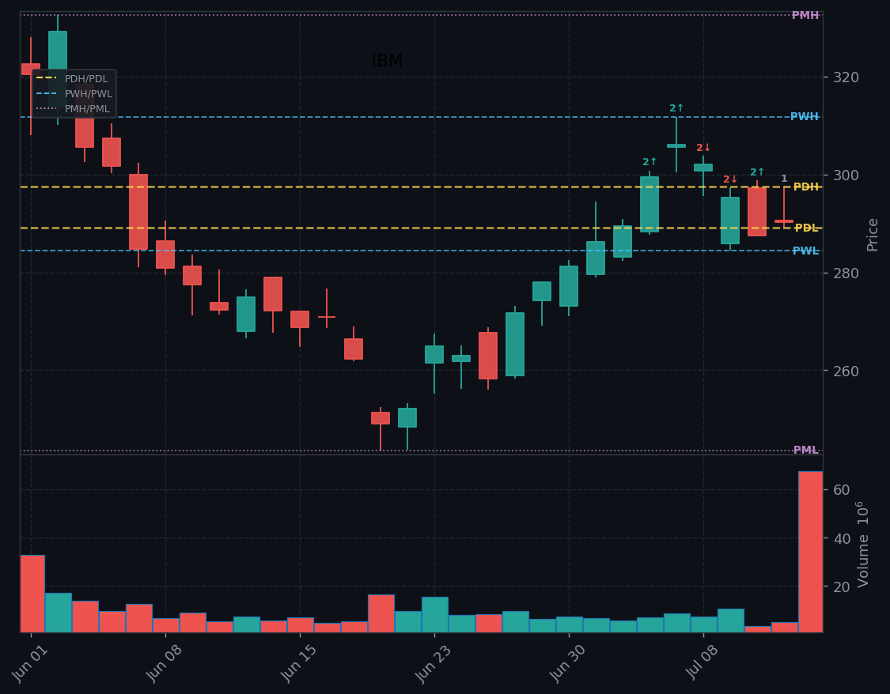

Triple-header Tuesday before lunch: June CPI at 8:30, major bank earnings (JPM, BAC, WFC, GS, C), and new Fed Chair Warsh's first congressional testimony at 10. Banks broadly beat but IBM is in freefall (-20%) after a preliminary Q2 miss. Goldman delivers a record quarter while memory names attempt to bounce after Monday's -6% shellacking. Iran/Strait of Hormuz keeps oil elevated (Brent $87+, WTI…
Triple-Header Tuesday: CPI 8:30 + Bank Earnings + Warsh Testimony — IBM -20%, Semis Bouncing, Oil Elevated

Trump reinstated blockade on Iranian shipping through Strait of Hormuz — keeping Brent crude above $87 and WTI above $80. XLE and USO catching the bid as direct result. Trump also speaking at 11am ET (war/economic topics expected) and meeting with Iraq PM — watching for any de-escalation signals that could reverse the oil trade and ease inflation concerns into CPI. Watch White House Live at 11am.